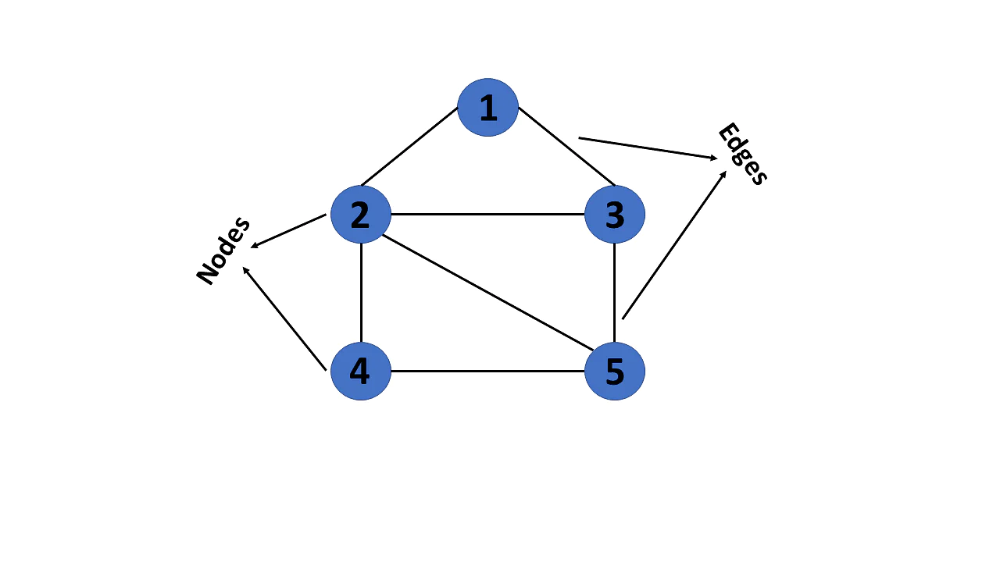
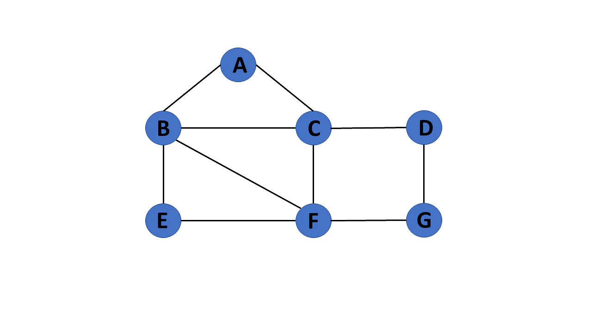
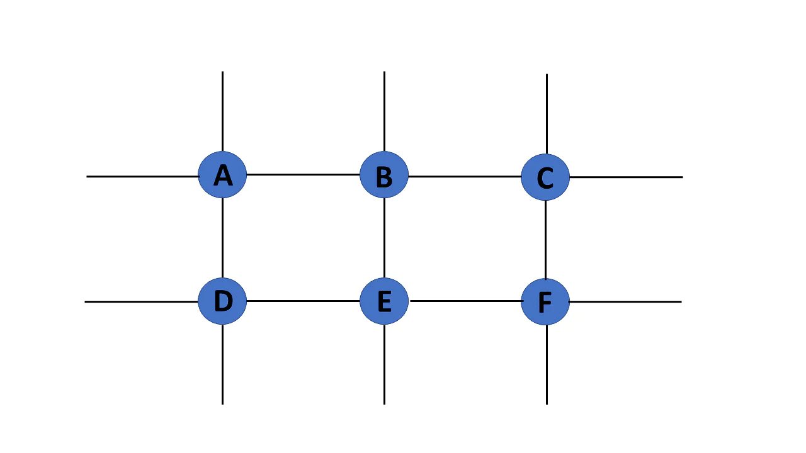
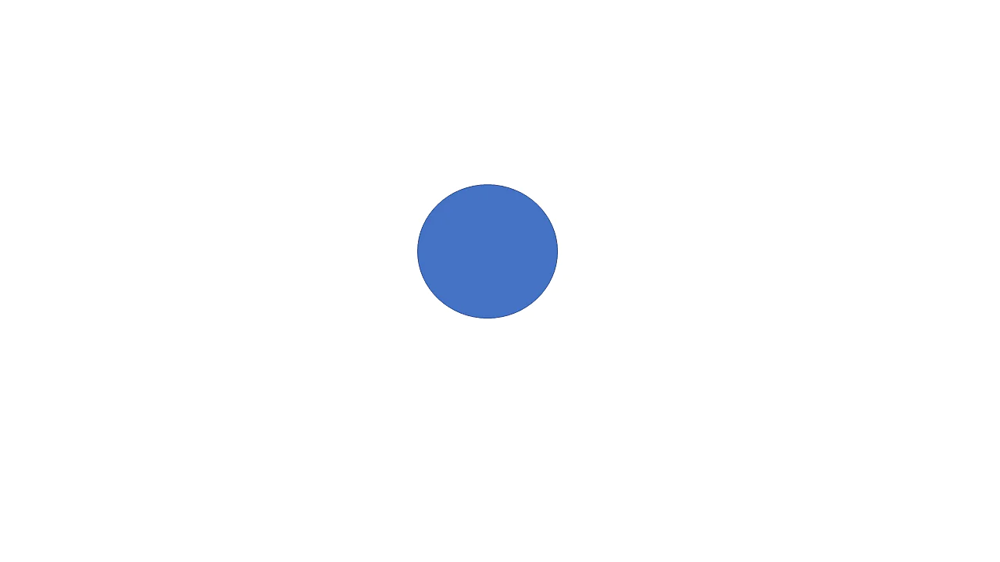

GRAPHS IN DATA STRUCTURE
Graphs in data structures are non-linear data structures made up of a finite number of nodes or vertices and the edges that connect them. Graphs in data structures are used to address real-world problems in which it represents the problem area as a network like telephone networks, circuit networks, and social networks. For example, it can represent a single user as nodes or vertices in a telephone network, while the link between them via telephone represents edges.A graph is a non-linear kind of data structure made up of nodes or vertices and edges. The edges connect any two nodes in the graph, and the nodes are also known as vertices.

This graph has a set of vertices V= { 1,2,3,4,5} and a set of edges E= { (1,2),(1,3),(2,3),(2,4),(2,5),(3,5),(4,50 }.
Types of Graphs in Data Structures
There are different types of graphs in data structures, each of which is detailed below.Finite Graph
The graph G=(V, E) is called a finite graph if the number of vertices and edges in the graph is limited in number. 
Infinite Graph
The graph G=(V, E) is called a finite graph if the number of vertices and edges in the graph is interminable. 
Trivial Graph
A graph G= (V, E) is trivial if it contains only a single vertex and no edges.

Graph Terminology
Representation of Graphs in Data Structures
Graphs in data structures are used to represent the relationships between objects. Every graph consists of a set of points known as vertices or nodes connected by lines known as edges. The vertices in a network represent entities.The most frequent graph representations are the two that follow:

Since it is an undirected graph, for edge (0,2), we also need to mark edge (2,0); making the adjacency matrix symmetric about the diagonal.
Edge lookup(checking if an edge exists between vertex A and vertex B) is extremely fast in adjacency matrix representation but we have to reserve space for every possible link between all vertices(V x V), so it requires more space.
The index of the array represents a vertex and each element in its linked list represents the other vertices that form an edge with the vertex.
The adjacency list for the graph we made in the first example is as follows:

An adjacency list is efficient in terms of storage because we only need to store the values for the edges. For a graph with millions of vertices, this can mean a lot of saved space.
Graph Operations
The most common graph operations are:1.Check if the element is present in the graph
2.Graph Traversal
3.Add elements(vertex, edges) to graph
4.Finding the path from one vertex to another